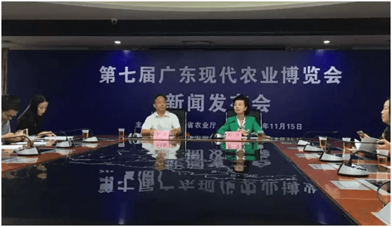
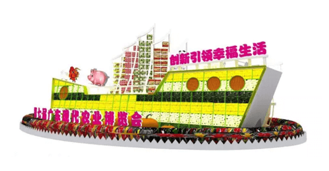
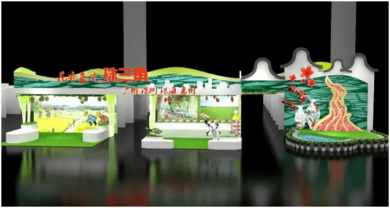
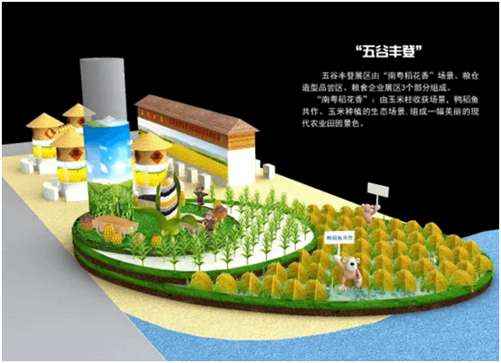
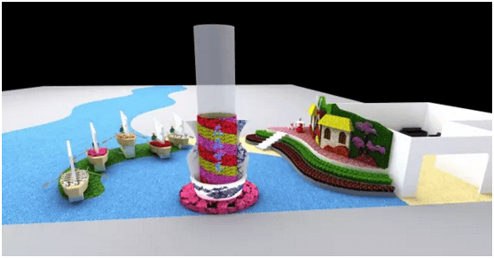
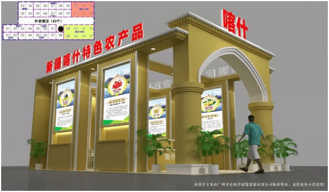
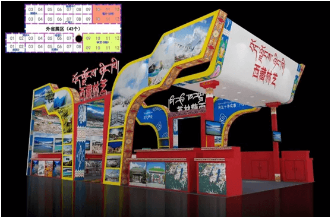

今天（11月15日）上午，第七届广东现代农业博览会（以下简称农博会）组委会在广东省农业厅召开新闻发布会，第七届农博会组委会副主任、省农业厅副厅长程萍通报了第七届农博会筹备及参展情况。
一起来看看新闻发布会上都剧透了哪些精彩信息吧
本届农博会紧扣“创新让生活更幸福”的主题，以“展示最新成果、助推产业升级”为办展宗旨，秉承“创新、开放、务实”的办会原则，采取“政府扶持与行业参与相结合”的运作模式，以“农业精品展示、农业交流合作、农业贸易洽谈”为主要内容，努力打造符合“市场化、专业化、国际化、品牌化、信息化”要求的高水平农业盛会和贸易交流平台。
本届农博会的创新点
1体现创新驱动
农业科技首次以科技联盟的形式参展。去年启动的全省农业创新联盟和今年启动的12个产业技术体系、8个共性关键技术创新团队最新的科技成果，将以科技联盟的形式在本届农博会上集中展出。
2体现区域特色
打破传统以经济区域划分进行组展。本届农博会打破传统以地市为单位划分单独展区的组展方式，而是以经济区域划分4个地市片区进行展示展销活动。来看看哪个是属于你的家乡的展区吧
3体现行业特色
首次以特色行业设置专业展区，设立7个专业展区，让市民朋友们逛起来省事省力
集中展示展销省内各地优质名米、名薯和食用油等粮油农产品。
集中展示展销广东花草及各种观赏植物。
此外，还有瓜果飘香展区，集中展示展销省内各地优质名果、蔬菜（瓜）；茗茶雅韵展区，集中展示展销省内各地优质名茶；独树一帜展区，集中展示展销广东省地理标志农产品；六畜兴旺展区，集中展示展销省内各地名猪、名鸡等畜禽产品以及肉蛋奶、饲料兽药名牌产品；精机汇粹展区，集中展示展销省内各地先进适用农业机械装备、设施和技术。
4体现地标特色

省农业厅与省质监局合作，联合组织我省最具代表性的获国家地理标志的农产品亮相，在独树一帜展区集中展示展销40多种地理标志农产品。
5体现服务特色

首次在农博会上开设名牌农产品超市，今年新评选的“十大名牌”系列农产品集中在超市展示展销，市民选购可以用微信、支付宝等方式支付。
6体现合作共赢
 泛珠三角省区、对口援助的新疆、西藏地区将组织企业参展。
新闻发布会上还剧透了亮点，本届农博会可谓是亮点纷呈，看点多多啊。别得不说，咱就说参展的农产品。
1农产品量多质优
本届农博会参展企业近800家，3000多种农产品集中展示展销。备受关注的第二届广东“十大名牌”系列农产品也将在本次农博会上揭晓。
值得推介的是，第一、二届“十大名牌”系列农产品获奖产品也将集中展销，农产品企业准备了多重优惠，让市民在展会现场可以购买到价廉质优的农产品。
2加强监测，保障安全
农产品质量安全一直是广大市民最关心的问题之一，更是本届农博会工作的重中之重。
所有参展企业和参展产品都是经过高标准、严要求，认真筛选，展示和展销的都是最有特色和有质量安全保障的农产品。
另外，现场将特别注意加强对参展产品的质量安全监测，确保参展农产品的质量安全，并在现场加强对展销区的管理，严把参展企业关，防止参展企业中途撤展、私下转让展位给小商小贩的情况发生。
可以说，本届农博会是一场色香味俱全的“农业”大餐，更是一场华丽的视觉盛宴，有得看、有得吃、有得玩、有得买。